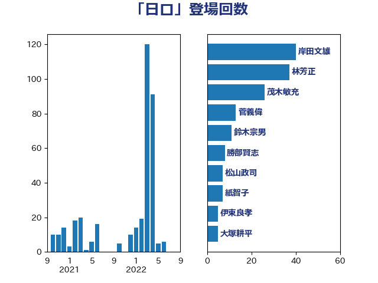

単語「日ロ」

| 岸田文雄 | 自由民主党 | 40 回 |
| 林芳正 | 自由民主党 | 37 回 |
| 茂木敏充 | 自由民主党 | 26 回 |
| 菅義偉 | 自由民主党 | 13 回 |
| 鈴木宗男 | 日本維新の会 | 11 回 |
| 勝部賢志 | 立憲民主党 | 8 回 |
| 松山政司 | 自由民主党 | 7 回 |
| 紙智子 | 日本共産党 | 7 回 |
| 伊東良孝 | 自由民主党 | 5 回 |
| 大塚耕平 | 国民民主党 | 5 回 |
| 太栄志 | 立憲民主党 | 5 回 |
| 高橋はるみ | 自由民主党 | 5 回 |
| 世耕弘成 | 自由民主党 | 4 回 |
| 佐藤英道 | 公明党 | 4 回 |
| 國場幸之助 | 自由民主党 | 4 回 |
| 徳永久志 | 立憲民主党 | 4 回 |
| 横山信一 | 公明党 | 4 回 |
| 渡辺周 | 立憲民主党 | 4 回 |
| 鈴木貴子 | 自由民主党 | 4 回 |
| 井上哲士 | 日本共産党 | 3 回 |
| 古賀之士 | 立憲民主党 | 3 回 |
| 小田原潔 | 自由民主党 | 3 回 |
| 岩渕友 | 日本共産党 | 3 回 |
| 熊野正士 | 公明党 | 3 回 |
| 稲津久 | 公明党 | 3 回 |
| 篠原豪 | 立憲民主党 | 3 回 |
| 藤巻健太 | 日本維新の会 | 3 回 |
| 長浜博行 | 無所属 | 3 回 |
| 上田清司 | 国民民主党 | 2 回 |
| 和田政宗 | 自由民主党 | 2 回 |
| 山下芳生 | 日本共産党 | 2 回 |
| 岡田克也 | 立憲民主党 | 2 回 |
| 杉尾秀哉 | 立憲民主党 | 2 回 |
| 松川るい | 自由民主党 | 2 回 |
| 松野博一 | 自由民主党 | 2 回 |
| 梶山弘志 | 自由民主党 | 2 回 |
| 泉健太 | 立憲民主党 | 2 回 |
| 浅田均 | 日本維新の会 | 2 回 |
| 玄葉光一郎 | 立憲民主党 | 2 回 |
| 福山哲郎 | 立憲民主党 | 2 回 |
| 蓮舫 | 立憲民主党 | 2 回 |
| 金城泰邦 | 公明党 | 2 回 |
| 鈴木俊一 | 自由民主党 | 2 回 |
| 鈴木隼人 | 自由民主党 | 2 回 |
| 上杉謙太郎 | 自由民主党 | 1 回 |
| 伊藤孝恵 | 国民民主党 | 1 回 |
| 吉良州司 | 無所属 | 1 回 |
| 小熊慎司 | 立憲民主党 | 1 回 |
| 小野田紀美 | 自由民主党 | 1 回 |
| 山岸一生 | 立憲民主党 | 1 回 |
| 山本順三 | 自由民主党 | 1 回 |
| 岸信夫 | 自由民主党 | 1 回 |
| 後藤祐一 | 立憲民主党 | 1 回 |
| 斉藤鉄夫 | 公明党 | 1 回 |
| 末松信介 | 自由民主党 | 1 回 |
| 本村伸子 | 日本共産党 | 1 回 |
| 杉本和巳 | 日本維新の会 | 1 回 |
| 杉田水脈 | 自由民主党 | 1 回 |
| 松原仁 | 立憲民主党 | 1 回 |
| 森屋隆 | 立憲民主党 | 1 回 |
| 片山大介 | 日本維新の会 | 1 回 |
| 田中健 | 国民民主党 | 1 回 |
| 田名部匡代 | 立憲民主党 | 1 回 |
| 田村智子 | 日本共産党 | 1 回 |
| 緒方林太郎 | 無所属 | 1 回 |
| 芳賀道也 | 国民民主党 | 1 回 |
| 菊田真紀子 | 立憲民主党 | 1 回 |
| 萩生田光一 | 自由民主党 | 1 回 |
| 高木啓 | 自由民主党 | 1 回 |